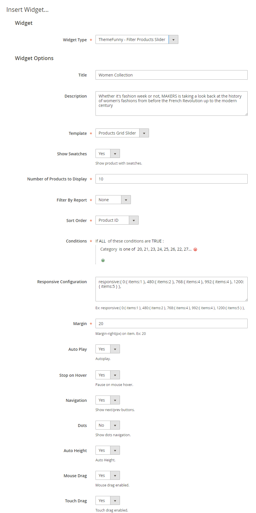
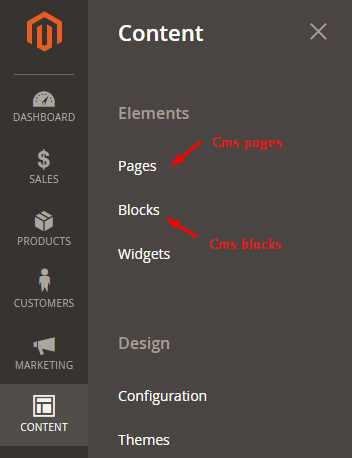
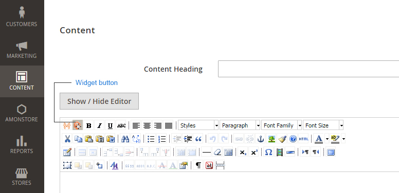
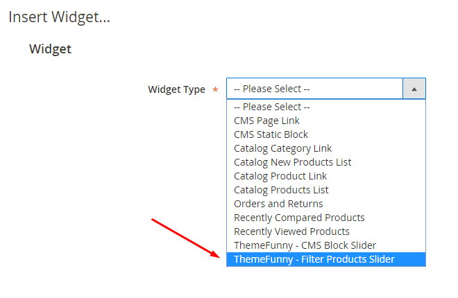
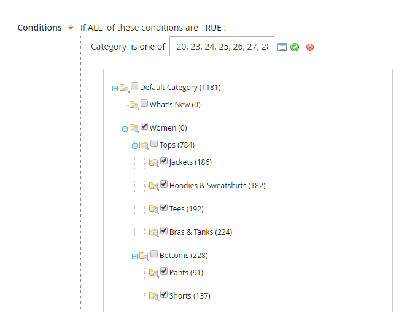
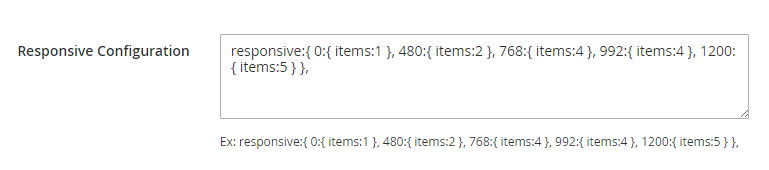
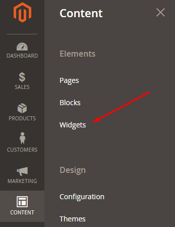
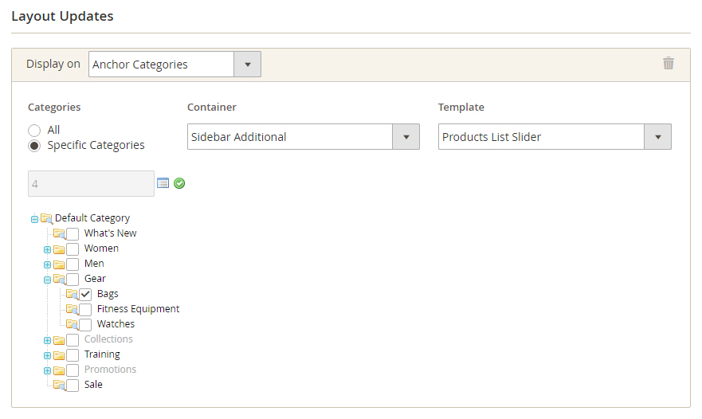
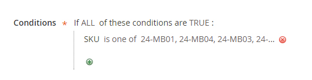
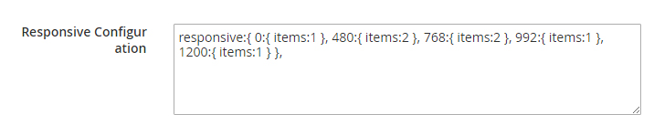

“Widget Filter Products” Documentation by “ThemeFunny” v1.0
“Widget Filter Products”
Thank you for purchasing our product. If you have any questions that are beyond the scope of this help file, please feel free to email via my user page contact form here. Thanks so much!
Table of Contents
- Features Full List
- System Requirements
- How To Intall
- How To Configure
- Examples And Demos
- How To Unintall
- Support And Feedback
A) Features Full List - top
- Built in widget form
- Easy to configure and customize
- Unlimited the number of slider on website page
- Display product slider any position on your website page
- Support 2 type of for slider: grid slider and list slider
- Filter by attribute of product(condition) with best seller, most viewed products
- Fully responsive and simple to customize all options of slider
- Support mouse drag, touch drag
B) System Requirements - top
To install this module you must have a working version of Magento already installed. If you need help installing Magento, follow below sites and tutorials from magento.com, hope everything that you need are there.
C) How To Intall - top
- We recommend you to duplicate your live store on a staging/test site and try installation on it in advance
-
Backup magento files and the store database.
It’s very important to backup all of themes and extensions in Magento before installation, especially when you are working on a live server. We strongly recommend you to do not omit this step.
- Unzip extension package and upload them into Magento root directory.
-
Enter the following at the command line
- php bin/magento setup:upgrade
- php bin/magento setup:static-content:deploy
- Logout and Login again to avoid Access denied 404 error when you go to this product configuration.
Explaination for configuration param.
- Title: Title of slider.
- Description: Short description for products.
- Template: Layout of slider product, support 2 types: grid slider and list slider
- Show Swatches: Display the product with the attributes companied such as size, color, and etc.
- Number of Products to Display: Litmit the number of product which are shown on fronten area.
- Filter By Report: Display the product such as best seller, most viewed.
- Sort Order: Arrange products according to criteria: ID, name, random.
- Conditions: filter products according to artribute, manufacturer, artribute set, price, size, etc
- Responsive Configuration: Customize the responsive feature for product to display on desktop, tablet, mobile. You can add some extra options for slider.
- Margin: The distance between products on slider.
- Auto Play: Slider runs automatically.
- Stop on Hover: Slider stops automatically when you hover into slider.
- Loop: Slider replay.
- Navigation: Show next/prev buttons.
- Auto Height: Auto adjust the height of slider when the dimension of products are different.
- Mouse Drag: Use mouse to drag slider to load more products.
- Touch Drag: Support "Touch" drag feature mobile.

E) Examples And Demos - top
The following ones is simple to imitate or practice for you, you can combine many condition to filter the products as your opinion
In cms page, block
- Go to Admin panel
- Click
Content -> Pages or Blocks

- Click
widget button

- Select
ThemeFunny - Filter Products Slider

- For Example: You want to display the product which belongs to the category Women. You should go to cms page
- Fill all information for Widget such as title, description, template, etc...
- In param Conditions select woment category

- In param Responsive Configuration: fill the criteria about responsive feature for slider that will show well on desktop, tablet and mobile.

View detail here.
Beside, you can add some extra options for slider. View detail here
- Click button
Insert Widget
- The result is due to the content of cms pages or block, widget icon had been inserted and click
Save Page button
- Go to cms page or block to check it
In category
For example: In the sidebar of category Bags, you want to display a product slider (slider type list)
- Goto Admin panel
- Click
Content -> Widgets

- Click
Add Widget button
- In param Type: select
ThemeFunny - Filter Products Slider. Param Design Theme: select your current theme. Click Continue button
- In the tab
Storefront Properties:
- Fill the information: Widget Title, Assign to Store Views, Sort Order ...
- In the param Layout Updates: Click Add Layout Update button
- Configure as the image:

- In the tab
Widget Options:
- Fill the information for widget such as Title, Description, Template ...
- In the param Conditions: select SKU and select the product which you want to display

- In the param Responsive Configuration: Fill all the responsive criteria for slider to display well on desktop, tablet and mobile

- Click
Save button
- Flush cache to make the change effectively:
- Go to System -> Cache Management
- Click Flush Cache Storage button
- Go to Bags category to check the result
F) How To Unintall - top
- Note: Backup Code, database before doing this.
-
Delete the following files, folders:
- app/code/ThemeFunny/FilterProducts
-
Enter the following at the command line
- php bin/magento setup:upgrade
- php bin/magento setup:static-content:deploy
Or flush cache
- Goto Admin panel
- System -> Cache Management
- Click Flush Cache Storage button.
G) Support And Feedback - top
Once again, thank you so much for purchasing our product. As I said at the beginning, I'd be glad to help you if you have any questions relating to this module. No guarantees, but I'll do my best to assist. If you have a more general question relating to the module on Codecanyon, you might consider visiting the forums and asking your question in the "Item Discussion" section.
ThemeFunny.
Go To Table of Contents